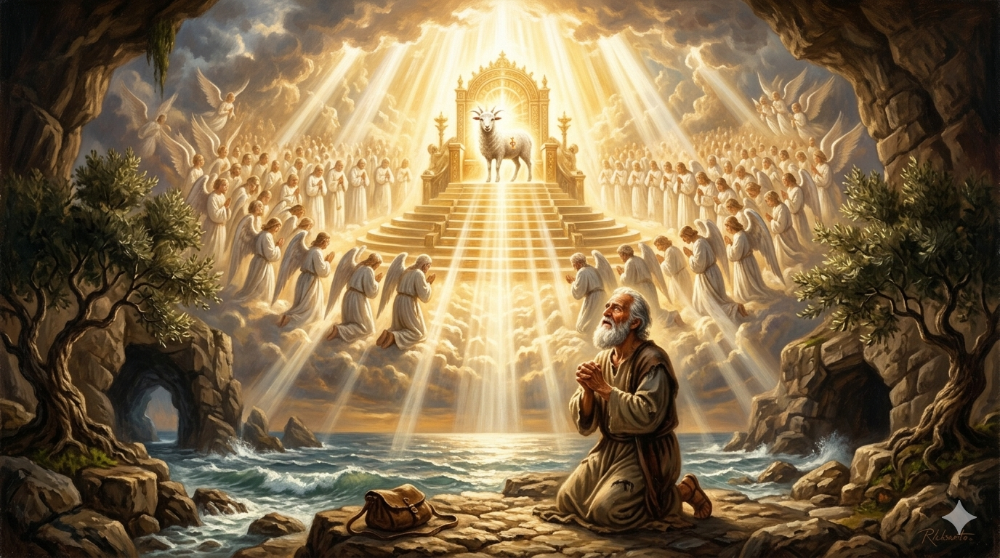
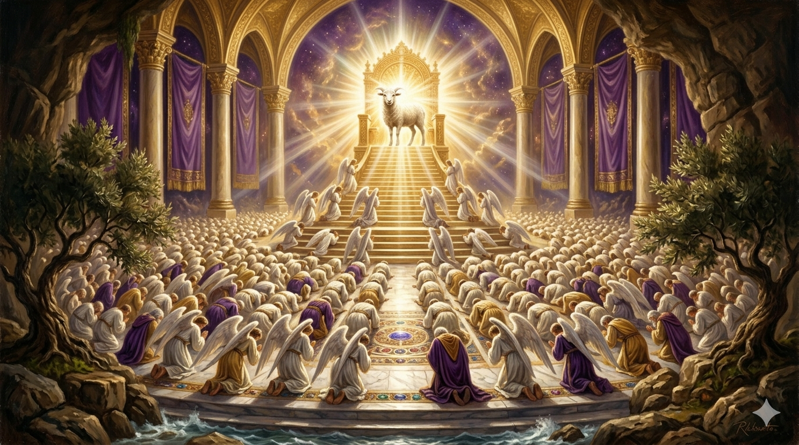

밧모 섬에서 황홀경에 빠진 노사도 요한이 무릎을 꿇고 하늘을 바라보는 모습 — 그의 눈앞에 보좌와 어린 양의 환상이 펼쳐지고, 수만 수천의 천사들이 빛의 물결처럼 어린 양 앞에 경배드리는 장면이 하늘에 가득하다. 웅장하고 경건한 유화 스타일
"내가 또 보니 보좌와 네 생물과 장로들 사이에 한 어린 양이 서 있는데 일찍이 죽임을 당한 것 같더라 … 그 어린 양이 나아와서 보좌에 앉으신 이의 오른손에서 두루마리를 취하시니라 그 두루마리를 취하시매 네 생물과 이십사 장로들이 그 어린 양 앞에 엎드려 … 큰 소리로 이르되 죽임을 당하신 어린 양은 능력과 부와 지혜와 힘과 존귀와 영광과 찬송을 받으시기에 합당하도다" — 요한계시록 5:6, 7–8, 12
요한은 밧모 섬에서 황홀경 가운데 하늘 보좌실을 목격합니다. 하나님의 오른손에는 일곱 인으로 봉해진 두루마리가 있었는데, 이것을 열기에 합당한 자가 아무도 없어 요한이 크게 울었습니다. 바로 그 순간, 장로 중 하나가 말합니다 — "울지 말라 유다 지파의 사자 다윗의 뿌리가 이겼으니." 그리고 요한이 눈을 들었을 때 본 것은 사자가 아니라 "일찍이 죽임을 당한 것 같은 어린 양"이었습니다. 이것이 계시록의 핵심 역설입니다. 이기는 자는 정복자가 아니라 희생된 어린 양입니다.
어린 양이 두루마리를 취하자 온 하늘이 예배로 가득 찹니다. 네 생물과 이십사 장로들, 그리고 수만 수천의 천사들이 합창합니다 — "죽임을 당하신 어린 양은 능력과 부와 지혜와 힘과 존귀와 영광과 찬송을 받으시기에 합당하도다." 일곱 가지 찬양이 어린 양께 돌려집니다. 요한이 평생 붙든 예수님 — 갈릴리 호숫가에서 처음 따라간 그 분, 십자가 곁에서 마지막을 지킨 그 분 — 이 분이 바로 온 우주가 경배하는 주님이심을 요한은 마침내 눈으로 봅니다.

천상의 보좌 앞에 무릎 꿇은 수천 천사들의 물결 — 보좌 중심에서 찬란한 황금빛이 폭발적으로 퍼져 나오고, 그 빛 안에 서 있는 어린 양의 형체가 보인다. 웅장하고 신성한 분위기, 황금·백색·자주 색조의 유화 스타일
요한이 본 하늘 예배는 지금 이 순간에도 계속되고 있습니다. 우리가 드리는 예배는 고립된 종교 행위가 아니라, 온 우주가 참여하는 하늘 예배에 합류하는 것입니다. 주일 예배를 드릴 때, 혼자 기도할 때, 찬양을 부를 때 — 그 순간 우리는 네 생물과 이십사 장로들과 수만 수천 천사들과 함께 어린 양 앞에 서 있습니다. 이 사실을 알면 우리의 예배가 달라집니다.
"죽임을 당하신 어린 양은 합당하도다" — 이 찬양이 핵심입니다. 권능과 영광이 아니라 희생과 죽음이 그분을 합당하게 했습니다. 세상은 강함으로 통치하는 자에게 찬양을 돌리지만, 하늘은 자신을 내어 준 어린 양에게 찬양을 돌립니다. 오늘 나의 삶에서 내가 높이는 것은 무엇입니까? 세상의 힘입니까, 아니면 어린 양의 십자가입니까?
죽임을 당하신 어린 양이 합당하십니다.
당신의 삶에서 가장 높은 자리에 그분이 계십니까?
하늘의 예배가 지금 이 순간도 울려 퍼지고 있습니다 — 우리도 그 예배에 합류할 수 있습니다.